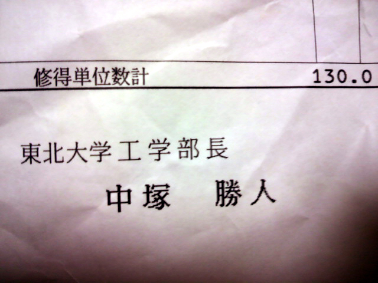

バカなやつらが「とつげきは大学なんて卒業してない！」「とつげきは東京大学で非常勤講師をしたと言っているが、ウソだ！」「東北大学に通信工学科なんて調べたけどなかったｗｗ」等と言ってくるので、それらへの反証資料をアップするためのページ。
2016/5/28追記
アメーバピグにいる「ちーちゃん」という嘘つきが、ついに「とつげき東北は中卒、大検を何度も落ちている。今は生活保護受けてて無職」と喧伝し始めたので、大学時代の学生証と成績証明書、学位記を貼っておく。
昭和51年11月11日産まれ、1997年東北大学工学部に入学し、2001年に通信工学科を卒業したのはおれだけだろう（しかもこんな良い成績で！ｗ）。
顔写真も、昔とはいえ、今他にネット上にアップしている写真と同一人物だとわかるだろうか。
まあどうせいつもどおり、これらもすべて根拠なく「ねつ造」と言われるだろうが、それがまた笑える。

以上、2016/5/28追記
あと、東北大学工学部電気・通信・電子・情報同窓会のお知らせが来たのでそれも貼っておく。

以上、2016/08/01追記
東京大学教養学部から正式に辞令を受け、非常勤講師として１３コマの講義を行ったことをわざわざ証明する。
アメーバピグにいる、「ちーちゃん」や「りおし」などのアホどもが、「非常勤講師なんて嘘だ！」「そもそも東大に非常勤講師なんてない！」「とつげきが非常勤講師をしていないと論証した」とか愚昧な発言をしてくるのでその対策。
ちなみに正規の（教授会での承認を経た）非常勤講師ではない自治会主催の自主ゼミは、日程の都合上非常にやりやすいため、何度も講師として講義をしている。
職場の長宛て、東京大学教養学部長からの公文書。
非常勤講師の委嘱についての照会。
とつげき東北宛て、教務委員長からの非常勤講師の依頼。
正規の国家公務員としての職務を行わず、東京大学非常勤講師を行うための給与減額措置に関する文書。
U-Task
東京大学教養学部において、学生の登録や単位の付与を行うためのシステム。
このマニュアルは教員用。
ログイン情報。
正式な非常勤講師としての出勤簿。必ずハンコを押さなければならない。
東京大学教養学部の自主ゼミに開講申請を出す際の提出書。
間違いなく『講師』と書かれている。

東大講義の資料はこっち。
東大講義の動画（ニコニコ）はこっち。
2017/12/03追記
頭の狂ったやつらが「とつげき東北は運転免許証すら持っていない」と大勢に言いふらし、「それを確信した」とブログで書いているので、一応ゴールドで先日更新したばかりの運転免許証もアップしとく。そもそも、運転免許証を持っていないことが、どう恥ずかしいのかよくわからんのだが、まあ早慶レベルすら出てないやつが何考えてるのかおれにはわからんし興味はない。おれが昭和51年11月11日生まれでこんな顔なのは、ネットで探せばすぐわかる。